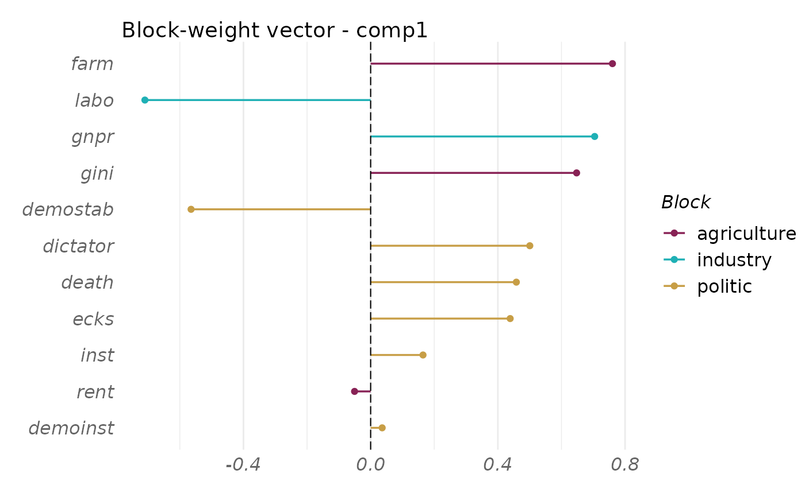
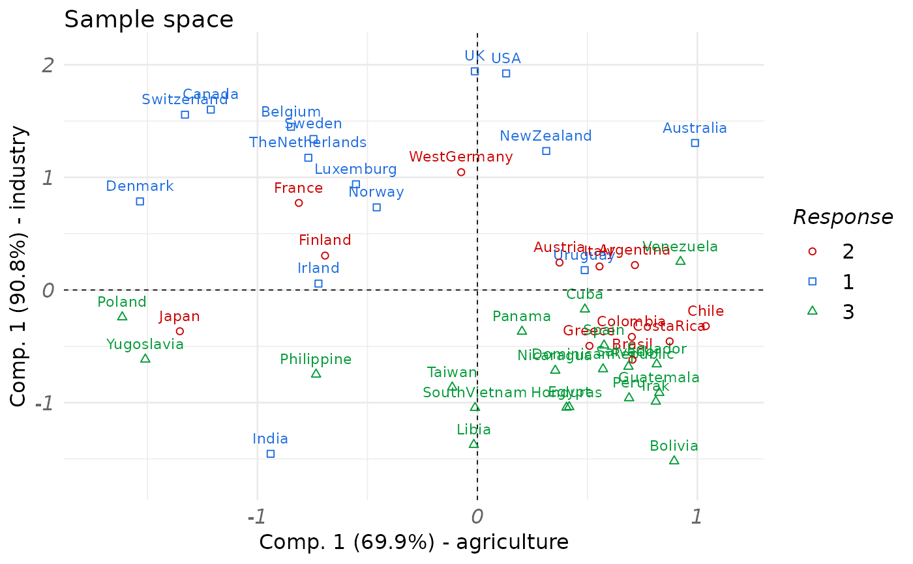
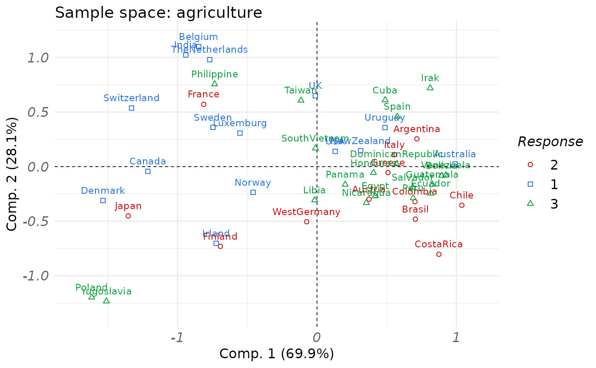
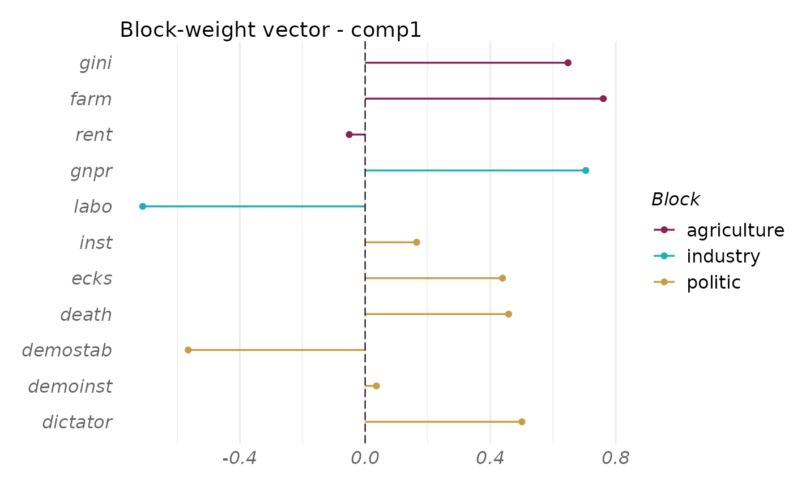
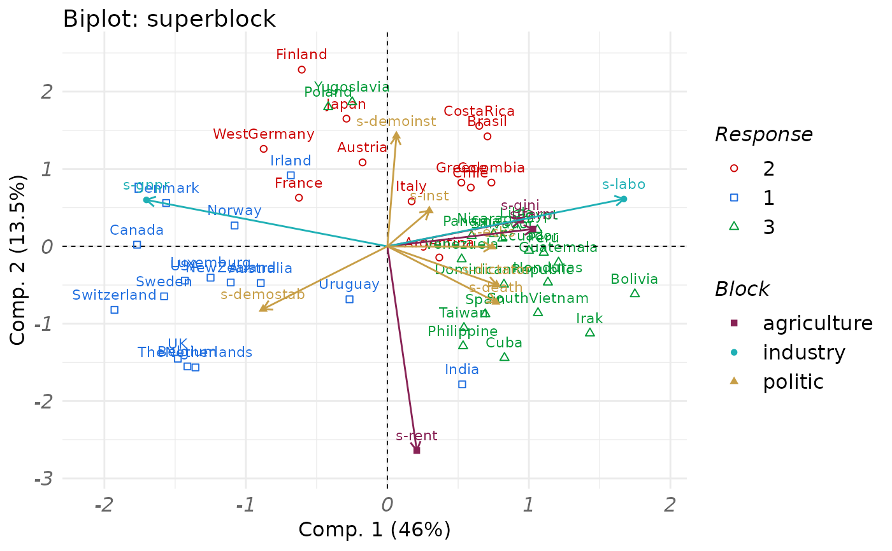

RGCCA is a general statistical framework for multiblock data analysis. The rgcca() function implements this framework and is the main entry point of the package.
Usage
rgcca(
blocks,
connection = NULL,
tau = 1,
ncomp = 1,
scheme = "factorial",
scale = TRUE,
init = "svd",
bias = TRUE,
tol = 1e-08,
verbose = FALSE,
scale_block = "inertia",
method = "rgcca",
sparsity = 1,
response = NULL,
superblock = FALSE,
NA_method = "na.ignore",
quiet = TRUE,
n_iter_max = 1000,
comp_orth = TRUE,
A = NULL,
C = NULL
)Arguments
- blocks
A list that contains the \(J\) blocks of variables \(\mathbf{X_1}, \mathbf{X_2}, ..., \mathbf{X_J}\). Block \(\mathbf{X}_j\) is a matrix of dimension \(n \times p_j\) where \(n\) is the number of observations and \(p_j\) the number of variables. The blocks argument can be also a fitted cval, rgcca or permutation object.
- connection
A (\(J \times J\)) symmetric matrix describing the network of connections between blocks (default value: 1-diag(J)).
- tau
Either a numerical value, a numeric vector of size \(J\), or a numeric matrix of dimension \(\mathrm{max}(\textrm{ncomp}) \times J\) containing the values of the regularization parameters (default: tau = 1, for each block and each dimension), or a string equal to "optimal". The regularization parameters varies from 0 (maximizing the correlation) to 1 (maximizing the covariance).
If tau is a numerical value, tau is identical across all constraints applied to all block weight vectors.
If tau is a vector, tau[j] is used for the constraints applied to all the block weight vectors associated to block \(\mathbf X_j\).
If tau is a matrix, tau[k, j] is associated with the constraints applied to the kth block weight vector corresponding to block \(\mathbf X_j\).
If tau = "optimal" the regularization parameters are estimated for each block and each dimension using the Schafer and Strimmer (2005) analytical formula. The tau parameters can also be estimated using rgcca_permutation or rgcca_cv.
- ncomp
A numerical value or a vector of length \(J\) indicating the number of components per block. If a single value is provided, the same number of components is extracted for every block.
- scheme
A string or a function specifying the scheme function applied to covariance maximization among "horst" (the identity function), "factorial" (the square function - default value), "centroid" (the absolute value function). The scheme function can be any continuously differentiable convex function and it is possible to design explicitly the scheme function (e.g. function(x) x^4) as argument of the function. See (Tenenhaus et al, 2017) for details.
- scale
A logical value indicating if variables are standardized.
- init
A string giving the type of initialization to use in the RGCCA algorithm. It could be either by Singular Value Decompostion ("svd") or by random initialization ("random") (default: "svd").
- bias
A logical value for biased (\(1/n\)) or unbiased (\(1/(n-1)\)) estimator of the variance/covariance (default: bias = TRUE).
- tol
The stopping value for the convergence of the algorithm (default: tol = 1e-08).
- verbose
A logical value indicating if the progress of the algorithm is reported while computing.
- scale_block
A logical value or a string indicating if each block is scaled.
If TRUE or "inertia", each block is divided by the sum of eigenvalues of its empirical covariance matrix.
If "lambda1", each block is divided by the square root of the highest eigenvalue of its empirical covariance matrix.
If standardization is applied (scale = TRUE), the block scaling applies on the standardized blocks.
- method
A string specifying which multiblock component method to consider. Possible values are found using available_methods.
- sparsity
Either a numerical value, a numeric vector of size \(J\) or a numeric matrix of dimension \(\textrm{max}(\textrm{ncomp}) \times J\) encoding the L1 constraints applied to the block weight vectors. For block \(j\), the amount of sparsity varies between \(1/\textrm{sqrt}(p_j)\) and 1 (larger values of sparsity correspond to less penalization).
If sparsity is a numerical value, then sparsity is identical across all constraints applied to all block weight vectors.
If sparsity is a vector, sparsity[j] is identical across the constraints applied to the block weight vectors associated to block \(\mathbf X_j\): $$ \forall k, \Vert a_{j,k} \Vert_{1} \le \textrm{sparsity}[j] \sqrt{p_j}. $$
If sparsity is a matrix, sparsity[k, j] is associated with the constraints applied to the kth block weight vector corresponding to block \(\mathbf X_j\): $$ \Vert a_{j,k}\Vert_{1} \le \textrm{sparsity}[k,j] \sqrt{p_j}. $$
The sparsity parameter can be estimated by using rgcca_permutation or rgcca_cv.
- response
A numerical value giving the position of the response block. When the response argument is filled, the supervised mode is automatically activated.
- superblock
A logical value indicating if the superblock option is used.
- NA_method
A string indicating the method used for handling missing values ("na.ignore", "na.omit"). (default: "na.ignore").
"na.omit" corresponds to perform RGCCA on the fully observed observations (observations from which missing values have been removed).
"na.ignore" corresponds to perform RGCCA algorithm on available data (See Tenenhaus et al, 2005).
- quiet
A logical value indicating if some diagnostic messages are reported.
- n_iter_max
Integer giving the algorithm's maximum number of iterations.
- comp_orth
A logical value indicating if the deflation should lead to orthogonal block components or orthogonal block weight vectors.
- A
Deprecated argument, please use blocks instead.
- C
Deprecated argument, please use connection instead.
Value
A fitted rgcca object.
- Y
A list of \(J\) elements. The jth element of the list \(Y\) is a matrix that contains the block components for block j.
- a
A list of \(J\) elements. The jth element of the list \(a\) is a matrix that contains the block weight vectors for block j.
- astar
A list of \(J\) elements. Each column of astar[[j]] is a vector such that Y[[j]] = blocks[[j]] %*% astar[[j]].
- crit
A list of vector of length max(ncomp). Each vector of the list is related to one specific deflation stage and reports the values of the criterion for this stage across iterations.
- primal_dual
A vector of length J. Element \(j\) is either "primal" or "dual", depending on whether the primal or dual RGCCA algorithm was used for block \(j\).
- AVE
A list of numerical values giving the indicators of model quality based on the Average Variance Explained (AVE): AVE(for each block), AVE(outer model), AVE(inner model).
- optimal
A logical value indicating if the Schaffer and Strimmer formula was applied for estimating the optimal tau parameters.
- opt
A list containing some options of the fitted RGCCA object.
- call
Call of the function.
- blocks
A list that contains the \(J\) blocks of variables \(\mathbf X_1, \mathbf X_2, \dots, \mathbf X_J\). Block \(\mathbf X_j\) is a matrix of dimension \(n \times p_j\) where \(p_j\) is the number of variables in \(\mathbf X_j\). These blocks are preprocessed according to the values of scale/scale_block/NA_method.
Details
Given \(J\) data matrices \(\mathbf X_1, \mathbf X_2, \dots, \mathbf X_J\) that represent \(J\) sets of variables observed on the same set of \(n\) individuals. These matrices \(\mathbf X_1, \mathbf X_2, \dots, \mathbf X_J\), called blocks must have the same number of rows, but may (and usually will) have different numbers of columns.
RGCCA aims to study the relationships between these \(J\) blocks. It constitutes a general framework for many multi-block component methods (see Tenenhaus and Tenenhaus, 2011 ; Tenenhaus et al. 2017). It combines the power of multi-block data analysis methods (maximization of well identified criteria) and the flexibility of PLS path modeling (the researcher decides which blocks are connected and which are not). Hence, the use of RGCCA requires the construction (user specified) of a design matrix \(\mathbf C\) that characterizes the connections between blocks. Elements of the (symmetric) design matrix \(\mathbf C = (c_{jk})\) are positive (and usually equal to 1 if blocks \(j\) and \(k\) are connected, and 0 otherwise). The rgcca() function implements a monotone global convergent algorithm: the bounded criteria to be maximized increases at each step of the iterative procedure and hits, at convergence, a stationary point of the RGCCA optimization problem.
Moreover, when the tau argument is used, depending on the dimensionality of each block \(\mathbf X_j, j = 1, \ldots, J\), the primal algorithm (when \(n \geq p_j\)) or the dual algorithm (when \(n < p_j\)) is used (see Tenenhaus et al. 2015).
When sparsity is specified SGCCA, extends RGCCA to address the issue of variable selection (Tenenhaus et al, 2014). Specifically, RGCCA is combined with an L1-penalty that gives rise to Sparse GCCA (SGCCA). The SGCCA algorithm is very similar to the RGCCA algorithm and keeps the same convergence properties (i.e. the bounded criteria to be maximized increases at each step of the iterative procedure and hits at convergence a stationary point).
At last, a deflation strategy can be used to compute several block components (specified by ncomp) per block. Within each block, components or weight vectors are guaranteed to be orthogonal. It should be noted that the numbers of components per block can differ from one block to another.
The rgcca() function handle missing values (punctual or blockwise missing structure) using the algorithm described in (Tenenhaus et al, 2005).
Guidelines describing how to use RGCCA in practice are provided in (Garali et al., 2018).
References
Garali I, Adanyeguh IM, Ichou F, Perlbarg V, Seyer A, Colsch B, Moszer I, Guillemot V, Durr A, Mochel F, Tenenhaus A. (2018) A strategy for multimodal data integration: application to biomarkers identification in spinocerebellar ataxia. Briefings in Bioinformatics. 19(6):1356-1369.
Tenenhaus M., Tenenhaus A. and Groenen P. J. (2017). Regularized generalized canonical correlation analysis: a framework for sequential multiblock component methods. Psychometrika, 82(3), 737-777.
Tenenhaus A., Philippe C. and Frouin, V. (2015). Kernel generalized canonical correlation analysis. Computational Statistics and Data Analysis, 90, 114-131.
Tenenhaus A., Philippe C., Guillemot V., Le Cao K. A., Grill J. and Frouin, V. (2014), Variable selection for generalized canonical correlation analysis, Biostatistics, 15(3), pp. 569-583.
Tenenhaus A. and Tenenhaus M., (2011). Regularized Generalized Canonical Correlation Analysis, Psychometrika, 76(2), pp 257-284.
Tenenhaus, M., Vinzi, V. E., Chatelin, Y. M., & Lauro, C. (2005). PLS path modeling. Computational statistics & data analysis, 48(1), 159-205.
Schafer J. and Strimmer K. (2005). A shrinkage approach to large-scale covariance matrix estimation and implications for functional genomics. Statistical Applications in Genetics and Molecular Biology 4:32.
Arnaud Gloaguen, Vincent Guillemot, Arthur Tenenhaus. An efficient algorithm to satisfy l1 and l2 constraints. 49emes Journees de Statistique, May 2017, Avignon, France. (hal-01630744)
Examples
####################
# Example 1: RGCCA #
####################
# Create the dataset
data(Russett)
blocks <- list(
agriculture = Russett[, seq(3)],
industry = Russett[, 4:5],
politic = Russett[, 6:11]
)
politic <- as.factor(apply(Russett[, 9:11], 1, which.max))
# RGCCA with default values : Blocks are fully connected, factorial scheme
# tau = 1 for all blocks, one component per block.
fit_rgcca <- rgcca(blocks = blocks)
print(fit_rgcca)
#> Fitted RGCCA model.
#> The algorithm converged to a stationnary point after 3 iterations.
plot(fit_rgcca, type = "weight", block = 1:3)

plot(fit_rgcca,
type = "sample", block = 1:2,
comp = rep(1, 2), resp = politic
)

############################################
# Example 2: RGCCA and multiple components #
############################################
# By default rgcca() returns orthogonal block components.
fit_rgcca <- rgcca(blocks,
method = "rgcca",
connection = 1 - diag(3),
superblock = FALSE,
tau = rep(1, 3),
ncomp = c(2, 2, 2),
scheme = "factorial",
comp_orth = TRUE,
verbose = TRUE
)
#> Computation of the RGCCA block components based on the factorial scheme
#> Computation of the RGCCA block components #1 is under progress...
#> Iter: 1 Fit: 0.71713961 Dif: 0.06767066
#> Iter: 2 Fit: 0.71721572 Dif: 0.00007611
#> Iter: 3 Fit: 0.71721585 Dif: 0.00000013
#> Iter: 4 Fit: 0.71721585 Dif: 0.00000000
#> The RGCCA algorithm converged to a stationary point after 3 iterations
#> Computation of the RGCCA block components #2 is under progress...
#> Iter: 1 Fit: 0.02960087 Dif: 0.01358225
#> Iter: 2 Fit: 0.02985623 Dif: 0.00025536
#> Iter: 3 Fit: 0.02985666 Dif: 0.00000043
#> Iter: 4 Fit: 0.02985666 Dif: 0.00000000
#> The RGCCA algorithm converged to a stationary point after 3 iterations
print(fit_rgcca)
#> Fitted RGCCA model.
#> The algorithm converged to a stationnary point:
#> - After 3 iterations for component 1.
#> - After 3 iterations for component 2.
plot(fit_rgcca,
type = "sample", block = 1,
comp = 1:2, resp = politic
)

plot(fit_rgcca, type = "weight",
block = 1:3, display_order = FALSE)

##############################
# Example 3: MCOA with RGCCA #
##############################
fit_rgcca <- rgcca(blocks, method = "mcoa", ncomp = 2)
print(fit_rgcca)
#> Fitted MCOA model.
#> The algorithm converged to a stationnary point:
#> - After 1 iterations for component 1.
#> - After 1 iterations for component 2.
# biplot representation
plot(fit_rgcca, type = "biplot", block = 4, resp = politic)

if (FALSE) { # \dontrun{
####################################
# Example 4: RGCCA and permutation #
####################################
# Tune the model to find the best set of tau parameters.
# By default, blocks are fully connected.
set.seed(27) #favorite number
perm_out <- rgcca_permutation(blocks,
n_cores = 1,
par_type = "tau",
n_perms = 50
)
print(perm_out)
plot(perm_out)
# all the parameters were imported from a fitted permutation object
fit_rgcca <- rgcca(perm_out)
print(fit_rgcca)
#######################################
# Example 5: RGCCA and dual algorithm #
#######################################
# Download the dataset's package at http://biodev.cea.fr/sgcca/ and install
# it from the package archive file.
# You can do it with the following R commands:
if (!("gliomaData" %in% rownames(installed.packages()))) {
destfile <- tempfile()
download.file(
"http://biodev.cea.fr/sgcca/gliomaData_0.4.tar.gz", destfile
)
install.packages(destfile, repos = NULL, type = "source")
}
data("ge_cgh_locIGR", package = "gliomaData")
blocks <- ge_cgh_locIGR$multiblocks
Loc <- factor(ge_cgh_locIGR$y)
levels(Loc) <- colnames(ge_cgh_locIGR$multiblocks$y)
blocks[[3]] <- Loc
sapply(blocks, NCOL)
# rgcca algorithm using the dual formulation for X1 and X2
# and the dual formulation for X3. X3 is the group coding matrix associated
# with the qualitative variable Loc. This block is considered
# as response block and specified using the argument response.
fit_rgcca <- rgcca(
blocks = blocks,
response = 3,
method = "rgcca",
tau = c(1, 1, 0),
ncomp = 1,
scheme = function(x) x^2, #factorial scheme,
verbose = TRUE,
)
fit_rgcca$primal_dual
print(fit_rgcca)
###########################################
# Example 6: RGCCA and variable selection #
###########################################
# Variable selection and RGCCA : the sgcca algorithm
fit_sgcca <- rgcca(
blocks = blocks,
method = "sgcca",
response = 3,
sparsity = c(.071, .2, 1), ncomp = 1,
scheme = "factorial", verbose = TRUE,
)
print(fit_sgcca)
############################################
# Example 7: RGCCA, multiple components #
# and different penalties per component #
############################################
# S/RGCCA algorithm with multiple components and different
# penalties for each components (-> sparsity is a matrix)
fit_rgcca <- rgcca(blocks, response = 3,
tau = matrix(c(.5, .5, 0, 1, 1, 0), nrow = 2, byrow = TRUE),
ncomp = c(2, 2, 1), scheme = "factorial")
print(fit_rgcca)
# the same applies for SGCCA
fit_sgcca <- rgcca(blocks, response = 3,
sparsity = matrix(c(.071, 0.2, 1,
0.06, 0.15, 1), nrow = 2, byrow = TRUE),
ncomp = c(2, 2, 1), scheme = "factorial")
print(fit_sgcca)
##################################################
# Example 8: Supervised mode en cross validation #
##################################################
# Prediction of the location from GE and CGH
# Tune sparsity values based on the cross-validated accuracy.
set.seed(27) #favorite number
cv_out <- rgcca_cv(blocks, response = 3,
par_type = "sparsity",
par_length = 10,
ncomp = 1,
prediction_model = "lda",
metric = "Accuracy",
k = 3, n_run = 5,
n_cores = 2)
print(cv_out)
plot(cv_out, display_order = TRUE)
# all the parameters were imported from the fitted cval object.
fit_rgcca <- rgcca(cv_out)
print(fit_rgcca)
} # }